After you create a widget group, you can use tabs within the group as well as minimize the group like it was a single widget.
To create a widget group:
Open the widgets you want to put into a group.
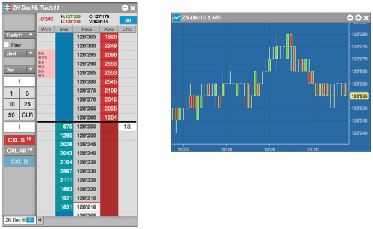
Right-click in the title bar of a widget, and select Create widget group.
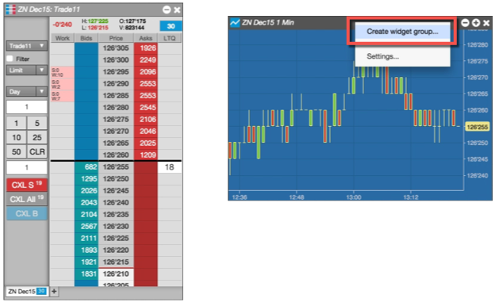
Drag the widget next to another widget, matching the edge color.
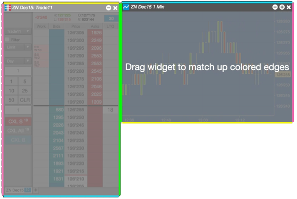
The two widgets are combined into a single widget.
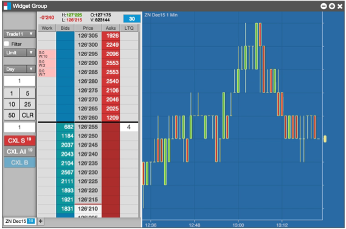
Move the new grouped widget to the desired location.
To save a custom widget:
Create a widget group with the desired widgets. In this case, you create a group from the Market Grid, Order Ticket, and Order Book widgets, as shown.
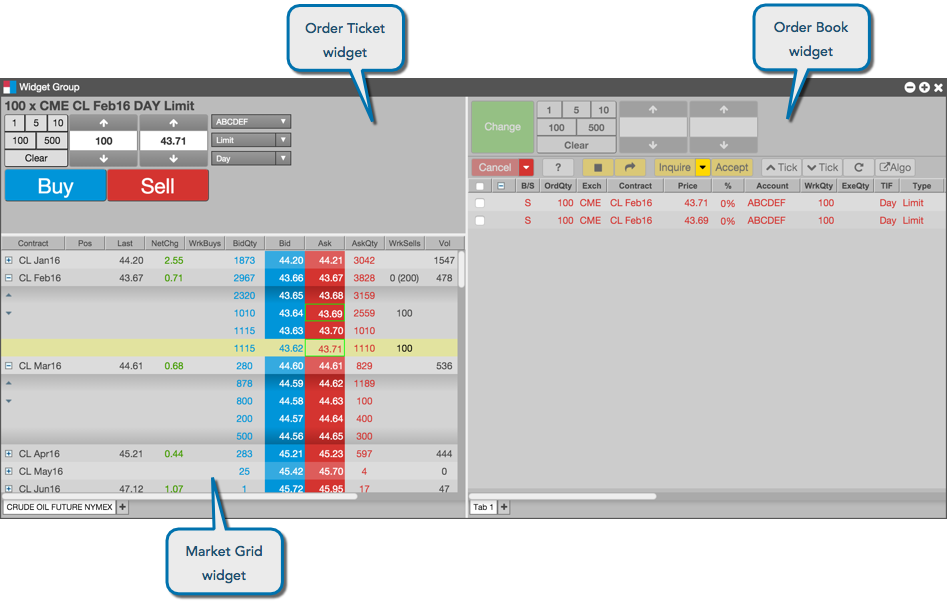
In the custom widget, right-click in the title bar and select Save as custom widget from the menu.
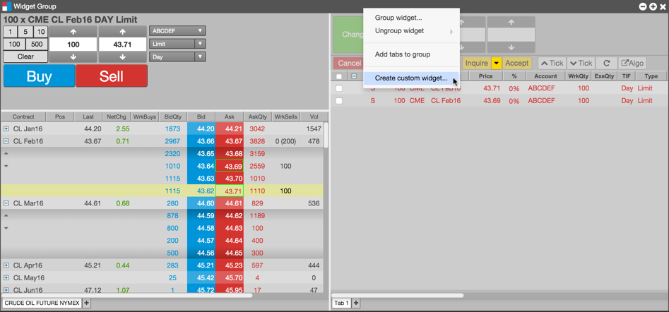
In the Save Custom Widget dialog, enter the following information for your custom widget:
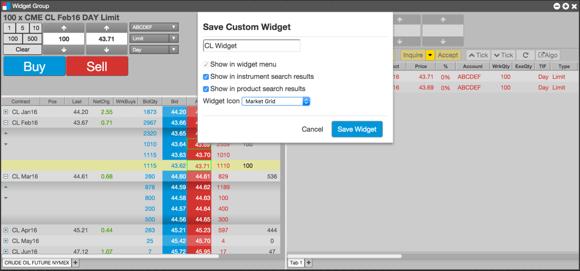
Click Save Widget.
If you want this widget to appear as an icon in search results, set it as a favorite in the Widgets menu.
In the widget group, right-click in the widget you want to minimize, and select Minimize Panel from the menu.
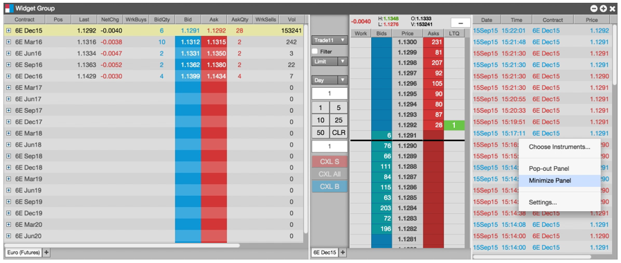
The selected widget collapses into a bar.
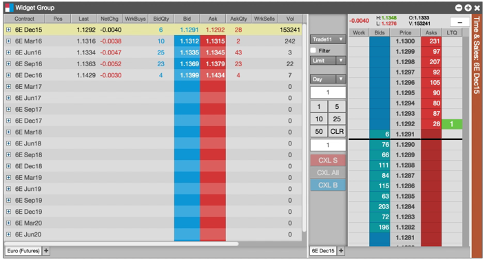
To restore the widget, click on the minimized widget bar.
In the widget group, right-click in the widget you want to minimize, and select Pop-out Panel from the menu.
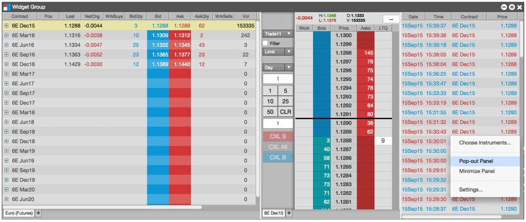
The selected widget reverts to a separate widget, leaving the rest of the widget group intact.
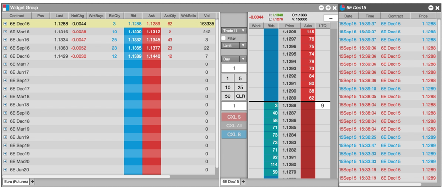